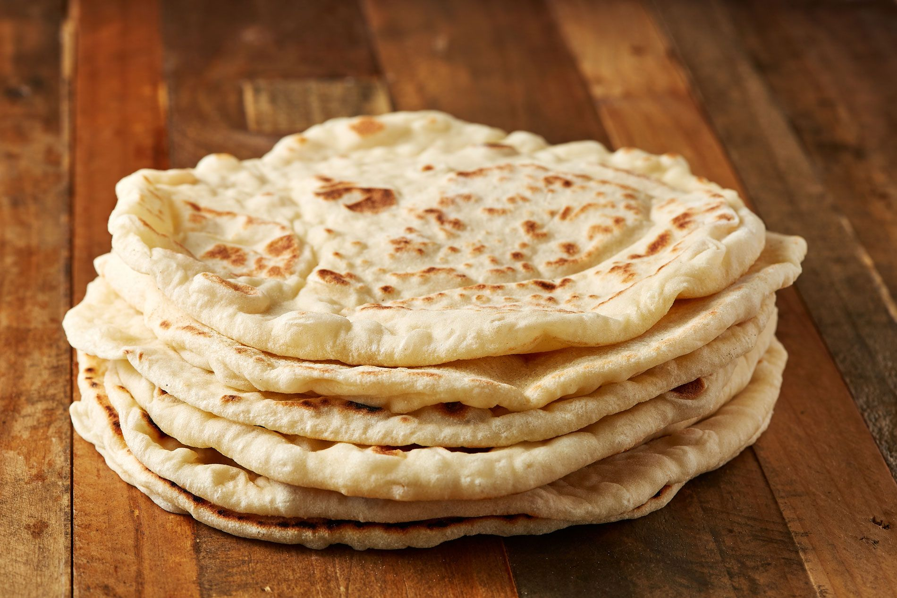

Pita Bread

Puffy yeast-raised pita bread, perfect for splitting and filling with your choice of ingredients,
is easy to make at home.
Staring through the oven door as pita bread bakes is the best part of making it at home. When I
teach my baking class, the culinary students are always amazed as the pita breads blow up like
balloons, seemingly about to pop. If they're not made right, though, the pitas won't puff and get
that big pocket in the middle—a key element of a successful pita.
Baking pitas at home is absolutely worth the effort. Freshly made ones are in a completely different
league from the ones bought at the store in plastic bags. They're chewier and more delicate, and they
have a delicious, yeasty aroma that wafts out when you open up the pocket. It's also not a major time
commitment: Pitas can be baked and sandwich-stuffed in less than two hours.
Ingredients
- 1 cup water (8 ounces; 240ml), 105-110°F (41-43°C)
- 1 tablespoon (15ml) extra-virgin olive oil, plus more for oiling the bowl
- 1 tablespoon (15g)
granulated sugar
- 2 1/4 teaspoons (7g) instant yeast
- 1 teaspoon (3g) kosher salt
- 1/2 cup whole wheat flour (2 1/2 ounces; 70g)
- 2 cups all-purpose flour (10 ounces; 280g), plus more for dusting
Steps
-
In a medium mixing bowl, combine water, oil, sugar, yeast, salt, and whole wheat flour with a wooden
spoon until combined and smooth. Stir in all-purpose flour until the mixture comes together into a
shaggy mass.
- Using clean hands, knead the dough in the bowl for 10 minutes or until it becomes smooth and very
elastic, adding only very small amounts of extra flour if dough is extremely sticky (see note).
Alternatively, knead dough at low speed in a stand mixer fitted with the dough hook attachment
until dough is very elastic and smooth, about 8 minutes.
- Turn dough out onto a lightly floured work surface and form into a smooth ball. Lightly oil a
clean mixing bowl and place dough inside, then rub oiled hands over the top of the dough. Cover
bowl with a damp cloth and let rise in a warm place for 1 hour.
- Meanwhile, place a baking steel or 12-inch cast iron skillet on the top oven rack and preheat
oven to 500°F (260°C). Line a plate with a large, clean kitchen towel and set aside.
- Punch down the dough, transfer to a lightly floured work surface, and cut into 6 even pieces.
Form each dough piece into an even ball. Cover with a damp towel and let rest for 10 minutes.
- Roll each piece of dough into about a 7-inch circle, no more than 1/4 inch thick, taking care
not to tear dough and keeping the thickness even all around. Place dough disks on a lightly
floured surface, cover with a damp towel, and let proof until slightly puffy, about 30 minutes.
- Working with as many pitas as will fit on the steel at once, pick up each pita and place on the
steel top side down. (If using a cast iron skillet, bake one pita at a time.) Immediately close the
oven door and bake until pitas have puffed and are slightly golden around the edges, about 3
minutes. Be careful not to over-bake.
- Place baked pitas onto towel-lined plate and wrap with the overhanging towel. Repeat with any
remaining pitas.
- For an extra-charred finish, heat a cast iron skillet on the stovetop over high heat until
smoking. Working with one pita at a time, briefly heat each side until charred in a few spots,
about 30 seconds. Return pita to towel and cover. Repeat with remaining pitas and serve
immediately.